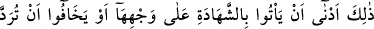

olmaları ihtimalini de zikrederek yeminlerinin genel kabul görmesini sağlamak içindir.
“Biz kimsenin hakkını çiğnemedik” Yani biz bu yeminimizde doğru şâhitlik sınırlarını
aşıp önceki şâhitlerin haklarını iptal ederek onlara düşmanlık etmedik. “Yoksa biz
elbette zalimlerden oluruz.” Yani “Eğer yeminimizde başkasının hakkını çiğnersek
kendi nefislerine zulmedenlerden oluruz. Çünkü bu durumda Allah Teâlâ’nın isminin
hürmetini çiğnemiş olacağımızdan, kendimizi Allah’ın gazâbına hedef yapmış oluruz.”
Diğer bir mânâya göre ise, “Hakkı hak ettiği yerden başkasına koymuş oluruz” demektir.
Bu iki âyetten anlaşılan özetle şudur: Ölmek üzere olan kişi, kendi ailesinden ya da
dîninden iki adil kişiyi, yapacağı vasiyete şâhit tutmalıdır. Eğer yolculukta olur da kendi
ailesine ve dînine mensup kimse bulamazsa, o zaman bu özellikleri taşımayan başka iki
kişiyi şâhit tutar. Daha sonra bu iki şâhidle ilgili bir şüphe doğacak olursa onlar, özel
bir vakitte yemin ettirilmek suretiyle ağırlaştırılan bir yeminde bulunarak “ne
şâhitlikten, ne de terekeden bir şey gizlemediklerini” ifade ederler. Eğer bundan sonra
şâhitlerin yalancı oldukları anlaşılır ve ellerinde terekeden bir şey görülürse ve onu
ölüden aldıklarını iddia ederlerse bu sefer vârisler yemin eder ve onların yeminine göre
amel edilir.
Yeminin ölenin yakınlarına intikal etmesi, vârislerin, vasiyetin şâhitlerinin o malı ölen
kişiden satın aldıklarını iddia etmeleri sebebiyledir. Eğer bir vasî, ölen kişinin
malından bir şey alsa ve “Bunu bana ölen kimse vasiyet etti” dese; eğer vârisler bunu
inkar ediyor, kabul etmiyorlarsa yemin ederler ve malı geriye alırlar. İnkar edene yemin
ettirilmesi ise nesh olunmuş bir hüküm değildir.
108. Bu (hüküm), şâhitliği gereği gibi yapmalarına, yahut yeminlerinden sonra,
yeminlerinin
(mirasçılar
tarafından)
reddedilmesinden
korkmalarına
(çekinmelerine çare olarak) daha uygundur. Allah’tan korkun ve iyi dinleyin. Allah,
fâsıklar topluluğunu doğru yola iletmez.
Tafsîlatı geçen “bu” hüküm, “Şahitliği gereği gibi yapmalarına”, yani şâhitlerin,
âhiret azâbından korkarak, herhangi bir tahrif ve ihanette bulunmadan şâhitliği, üzerine
aldıkları gibi gerektiği şekilde yerine getirmeleri demektir. Zikredildiği şekliyle
yeminin ağırlaştırılmasının sebebi budur.
“Yahut yeminlerinden sonra (yalancılıklarının ortaya çıkıp) yeminlerinin
reddedilmesinden korkmalarına daha uygundur.”
Âyetin bu kısmı yeminin vârislere teklifinin şer’î hikmetini açıklamaktadır. Şöyle ki: